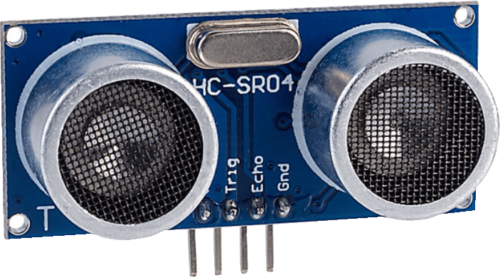
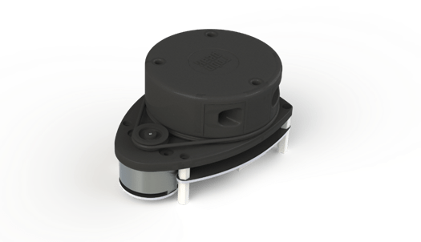

Autonomous Rover An open source project to recreate a miniature NASA Marss Rover Funded by NASA PSGC Github via Gfycat The goal: Get the rover from start to destination. It must avoid any obstacle along the way. The challenge: Do this only using microcontrollers. No microcomputer allowed! Process: Mechanics Control various sensors Tracking Path finding. Obstacle Avoidance When, Where, What ... Mapping Where is everyone? Localization Where am I? Simultaneously The brain...all must happen together. Mechanics Sensors and Tracking. The problem...we must find a method in which the rover can go from point A to B. One such solution is using a bearing tracking algorithm. Tracking Algorithm We find the bearing and check if the bearing equals the heading. If correct continue forwards, else spin. If an obstacle is encountered avoid obstacle and then proceed to tracking algorithm. Benefits: Simple Fast Memory efficient Dynamic (can withstand different enviroments) Effective Tracking Algorithm Visualized Head straight to our destination! Obstacle: Turn, go forwards a bit... Path: Continue following path... Obstacle: Turn, go forwards a bit... State Machine Clearly what is described requires some type of means to store this behavior. One such means is using a state machine. With state machines we can delegate exact moments for when the rover should exploit certain behaviors Tracking Algorithm We find the bearing and check if the bearing equals the heading. If correct continue forwards, else spin. If an obstacle is encountered avoid obstacle and then proceed to tracking algorithm. Benefits: Simple Fast Memory efficient Dynamic (can withstand different enviroments) Effective State Machine Visualized Track Go towards path. Object detected Spin...go forwards. Backwards Forwards Backup if too close. More in-depth overview Paths Obstacle Avoidance In order to avoid an obstacle it must be detected. There are various sensors used for object detection. Let's describe a few of them: Sensors Ultrasound LIDAR or RADAR IR Camera We have chosen to focus on LIDAR and Ultrasound. While the others are being developed more.  Ultrasound Range 190cm, Field of View 30 degrees. Method: Ultrasonic Ultrasounds have an emitter and a receiver. The sound emitted bounces off of a nearby object. The receiver detects this sound. Distance is found by measuring the time it takes for the receiver to receive the emitted sound. Ultrasound Field of View Due to ultrasound only giving back a scalar value, exact position of the object detected can not be found. Instead, the futher the range, the less exact the angle.  LIDAR Range 4-5 meters, angle and distance, Method: Light LIDAR sends a laser multiple times per second. It rotates at a certain rate, allowing for 360 detections. Map LIDAR maps the enviroment around it. Therefore, creating a internal map for the rover is critical. The map we created uses a node based system. These nodes surround the rover, and intersecting rays are detected. Simple Map A very simple map is having various nodes surrounding the rover. These nodes are spheres, and when a laser intersects the node that node becomes untraversable.